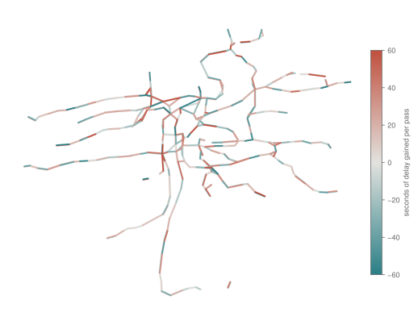
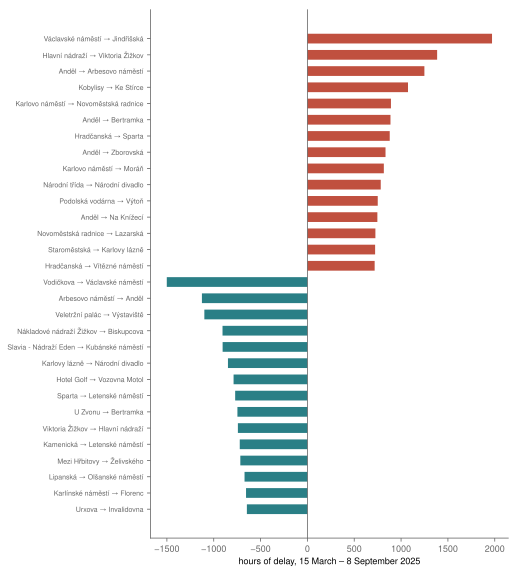
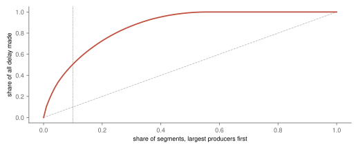
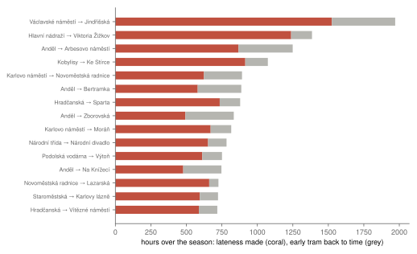
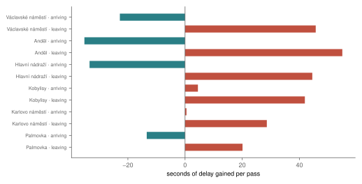
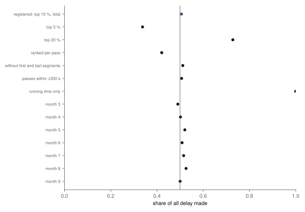

Research · Running late, part 1 · Prague trams and buses, spring and summer 2025
Where is delay born on Prague's trams? Segment by segment, 2025
A pre-specified analysis of every stop-to-stop segment of Prague's tram network finds that half of all delay is recorded on a tenth of the segments, narrowly, and on the same ones week after week; many of them leave the large stops, and part of what they record is early trams waiting for their time.
- delay recorded on the top tenth of segments
- 50.6 % 95 % confidence interval (CI) 50.3 to 50.9 % · supported, narrowly
- top tenth shared by odd and even weeks
- 95 % by total; rank correlation 0.999 · supported
- of which early trams waiting
- 24 % of the delay recorded on the top tenth; on lateness alone the share is 52.0 %
- tram passes
- 21.4 m 618 segments, 170 days, 15 March – 8 September 2025
Overwhelmed? Here's the short version
- Every time a tram goes from one stop to the next, its delay changes. Over 21.4 million such passes in 2025, the 62 of Prague's 618 tram segments with the largest totals recorded 50.6 % of all delay gained (50.3 to 50.9 %). That is just over the half set in advance, so concentration is supported, narrowly.
- They are the same segments from week to week: 95 % of the top tenth in odd weeks is also the top tenth in even weeks. With tens of thousands of passes per segment, that stability is close to guaranteed, so it says the pattern is structural, not why.
- A measured gain is not always lateness. A tram that reaches a stop early and waits for its departure time gains delay without being late. On the top tenth, about 24 % of the recorded gain is early trams coming back to time; counting lateness alone, the top tenth still record 52.0 %.
- The largest are Václavské náměstí → Jindřišská, Hlavní nádraží → Viktoria Žižkov and Anděl → Arbesovo náměstí. 16 of the 62 largest leave one of six large stops picked after seeing the list; dwell, boarding and holding to the timetable all fit, and none of them was measured. These descriptions came after the results and were not registered.
- City buses show the same concentration: a tenth of 1 286 segments record 51.2 % of their delay.
Photo: che · CC BY-SA 3.0, toned

A tram that reaches the end of its line five minutes late did not lose those five minutes in one place. It lost a few seconds here, made some up there, and the sum is what the passengers at the far end see. The author's thesis found that a sudden delay is still about half there some half an hour later1. This part asks where, along the line, the delay is recorded.
Every pass of a tram from one stop to the next changes its delay by some number of seconds, positive if it falls further behind, negative if it catches up. Add those changes up for every pass over the season and each of Prague's tram segments has a total: the delay recorded there, or made up.
The question
Two questions were written down before any segment's delay was read. First, is the delay concentrated: do the tenth of segments with the largest totals record more than half of all the delay gained anywhere? Segments where trams catch up are left out of that sum, so the share is of the delay gained, not of the net. Second, are those places stable: if the segments are ranked by the delay per pass separately in odd and in even weeks, is the rank correlation at least 0.70? Both are read from a bootstrap that resamples whole days, which also redraws which segments count as the top tenth. A question is "supported" if its 95 % interval lies wholly above its line, "not supported" if wholly below, and "inconclusive" otherwise.
A segment here is one direction between two named stops, so the trip from Anděl to Arbesovo náměstí and the one back are two segments. The delay change on a pass is the delay at the next stop minus the delay at this stop, so it includes the time the tram stands at this stop as well as the run to the next.
Data
The passes are those of the author's thesis: Prague Integrated Transport's stop-time history from Golemio2, 15 March to 8 September 20251, with the screening of the earlier studies. Planned closures remove 2–31 % of tram passes a month, and passes without a delay change another 2–3 %. Passes whose delay changed by more than ten minutes on one segment are left out as diversions or faults, and 48 segments with fewer than 1 000 passes (9 116 passes in all) are treated as one-off routings and left out. That leaves 21.4 million tram passes over 618 segments on 170 days.
One thing in the data was not as its name said. The thesis's column for the delay gained on a segment turned out, on a sample of 42 407 passes, to be the running time against the timetable, which leaves out the time at the stop; it differed from the change in delay in 99.9 % of them. The design had a rule for this, fixed in advance: the change in delay is recomputed as the delay at the next stop minus the delay at this one. Running time alone is reported as a check.
Half of the delay on a tenth of the network
Over the season, Prague's trams gained 71 201 hours of delay on 347 segments and made up 56 244 hours on 271 others, 43.9 % of the segments; the net is 14 957 hours. The split between gained and made up depends on booking the time at a stop to the segment leaving it, so the net is the firmer number. The 62 segments with the largest totals recorded 50.6 % of the delay gained (95 % CI 50.3 to 50.9 %). The whole interval lies above one half, so the concentration is supported, but narrowly: one half was a round number fixed in advance, and 50.6 % clears it by less than a percentage point. Over all segments, the concentration curve has a Gini coefficient of 0.73 (fig. 3). The largest single total is Václavské náměstí → Jindřišská, with 1 971 hours over the season, +74 seconds on an average pass, followed by Hlavní nádraží → Viktoria Žižkov (1 385 h), Anděl → Arbesovo náměstí (1 249 h) and Kobylisy → Ke Stírce (1 074 h) (figs. 1 and 2).
Part of any concentration is tram volume: a segment with more trams has more passes to add up. A comparison computed after the results, and not registered, shows how much. The tenth of segments with the most passes carry 20.4 % of all tram passes, so if every segment added the same delay per pass, the top tenth would record about 20.4 % of the delay. They record 50.6 %. The largest totals are not simply the busiest segments either: they carry 15.3 % of the passes, and 40 % of them are also among the busiest tenth. Road traffic was not measured.

The segments leaving Václavské náměstí, Hlavní nádraží and Anděl recorded the most delay; segments arriving at them made up the most.

Half of the delay gained is recorded on a tenth of the segments.

The same places, week after week
Ranked by the delay per pass in odd weeks and again in even weeks, the segments come out in nearly the same order: the rank correlation is 0.999, and its 95 % interval, 0.996 to 0.999, lies above 0.70, so stability is supported. That threshold was easy to pass. With tens of thousands of passes on each segment, a segment's mean barely moves from week to week, so a near-perfect rank correlation is close to guaranteed by construction; it says the recorded pattern is a stable feature of the network, not what causes it. The overlap of the top tenth itself is the more telling figure: 95 % of the 62 segments with the largest totals in odd weeks are also among them in even weeks, and 98 % when ranked per pass. The point estimate of the correlation sits just above its own bootstrap interval, for trams (0.9994 against an upper bound of 0.9990) and for buses (0.9984 against 0.9976): resampling whole days draws some days twice and spreads them unevenly between odd and even weeks, which pulls the correlation down a little, and the label does not depend on it.
Weekday peaks and weekday middays share 92 % of their top tenth by delay per pass (a Jaccard index of 0.85), and on the top segments the delay per pass is about the same at both, 43 seconds at peaks and 42 at middays. The recorded delay is a stable feature of the network, not the accident of a given day or hour.
Early trams waiting for their time
A gain in delay is not always lateness. A tram that reaches a stop a minute early and waits there for its scheduled departure goes from −60 to 0 seconds of delay: it gains a minute without ever being late. This was not part of the design; it was computed after the results, once the large-stop pattern below made it the leading explanation. Of all tram passes, 26.6 % start a segment early. On the 62 segments with the largest totals, 43 % of the recorded gain comes from passes that started early, and 24 % of it is early trams coming back to time rather than lateness made, the lateness being the part of the delay above zero. On Anděl → Arbesovo náměstí, it is 31 % (fig. 4). Counting lateness alone, the network's net is 13 974 hours against 14 957 for the delay change, and the top tenth record 52.0 % of the lateness made, so the concentration does not depend on early trams.
On the largest totals, most of the recorded gain is lateness, but on some up to about two fifths is early trams coming back to time.

Arriving at and leaving six large stops
Many of the largest totals leave a few large stops: 16 of the 62 leave Václavské náměstí, Anděl, Hlavní nádraží, Kobylisy, Karlovo náměstí or Palmovka, six stops picked after seeing the list. Leaving each of them costs time, and at four of them, Anděl, Hlavní nádraží, Václavské náměstí and Palmovka, trams make time up on the way in; at Kobylisy and Karlovo náměstí they arrive about even. On an average pass, weighted over the segments, a tram's delay changes by −35 seconds arriving at Anděl and by +55 leaving it, and by −33 and +44 at Hlavní nádraží. On Václavské náměstí the segment from Vodičkova changes it by −56 seconds and the next one, on to Jindřišská, by +74 (fig. 5).
Leaving each of six large stops costs time; at four of them, trams make it up arriving.

Four explanations fit, and the data cannot separate them. The first is early trams holding: a tram that arrives at a timing stop ahead of its time waits there, and the wait is booked to the segment leaving the stop, as the previous section measured. The second is the timetable's slack: schedules give the run into a large stop some time in hand, so a late tram can arrive closer to time. The third is dwell and boarding: because the delay on a segment includes the time spent at its first stop, a tram that stands long while people board shows it on the segment leaving the stop; dwell was not measured here, and how long boarding takes is the subject of dwell-time models for buses7. The fourth is tram volume, which the comparison above shows explains only part of the concentration. How timetables spread slack, and how late vehicles pass delay on, is an old question for railways45 and buses6.
Checks
The share recorded on the top segments holds across the checks registered in advance (fig. 6). It is 34 % for the top 5 % of segments and 73 % for the top 20 %. Ranked by delay per pass instead of by total, the top tenth record 42 %. Leaving out the first and last segment of each trip gives 51 %, and keeping only passes within five minutes gives 51 %. Month by month the share runs from 49 to 53 %; in March it is 49.0 %, below one half, and in September, with 7 days, 50.0 %.
The running-time check is degenerate. Of the 521 segments with a running time, trams run faster than the timetable on 87 %, and over the season they ran 87 202 hours faster than it in all; only 67 segments lose time while moving, so the top tenth record practically all of that (100 %). The 97 segments without a running time are left out of it.
Whatever the check, delay is concentrated on a minority of segments.

City buses, analysed alongside with their own labels, show the same concentration: on routes 100 to 299, the top tenth of 1 286 segments record 51.2 % of their delay (50.7 to 51.8 %, supported), and the ranking is as stable as for trams (0.998, supported). Their peaks and middays share less of their top tenth (a Jaccard index of 0.52).
What this means
On Prague's trams in 2025, delay was recorded in fixed places: half of it on a tenth of the segments, narrowly, and the same ones from week to week. Many of the largest totals are segments leaving large stops, which is consistent with dwell, boarding and trams holding to the timetable, and about a quarter of what the largest record is early trams coming back to time. Which of these causes the delay, and how much, is not measured here.
What this does not show
A segment where delay is recorded is not always where it is caused: a tram held at a junction or a stop shows the delay on the segment where it is booked, and the timetable decides where a late tram can catch up. The split into lateness and early trams, the comparison with volume and the pattern at the large stops are descriptions found after the registered questions were answered, not tests. The delay is per vehicle, not per passenger, so a minute lost on a full tram counts the same as on an empty one. Dwell and road traffic were not measured. The season is one spring and summer; winter, the metro and other years are not covered. The map places 599 of 618 segments, those whose stops could be found in the timetable data.
Reproduction
Every number on this page is filled in from the result files by a script, from the repository root:
- The rain study's screening of closures and feed gaps: Does rain delay Prague's trams?, Reproduction.
tools/late/screen.py: the definition check, the screening and the segment sums.estimate.py, checked bytest_late.py: the registered estimates and checks.describe.py: the descriptions computed after the results.article.py: the map, the figures and this page.
The design is docs/research/delay-origins-design.md.
References
- Šandová, B. (2026). Persistence Dynamics and Welfare Costs of Urban Public Transport Delays. Master's thesis, Institute of Economic Studies, Faculty of Social Sciences, Charles University, Prague. Summary at bsandova.com/texts/thesis. Not yet in a public repository.
- Operátor ICT. Golemio, Prague's open-data platform: Prague Integrated Transport stop-time history, collected 15 March – 8 September 2025. golemio.cz. Accessed 8 October 2026.
- ROPID. Prague Integrated Transport open data: timetable in GTFS (stops, trips and routes). pid.cz/o-systemu/opendata. Accessed 8 October 2026.
- Carey, M. (1994). Reliability of interconnected scheduled services. European Journal of Operational Research 79(1), 51–72. doi:10.1016/0377-2217(94)90395-6. Accessed 8 October 2026.
- Kroon, L., Maróti, G., Helmrich, M. R., Vromans, M., Dekker, R. (2008). Stochastic improvement of cyclic railway timetables. Transportation Research Part B: Methodological 42(6), 553–570. doi:10.1016/j.trb.2007.11.002. Accessed 8 October 2026.
- Furth, P. G., Muller, T. H. J. (2007). Service reliability and optimal running time schedules. Transportation Research Record 2034, 55–61. doi:10.3141/2034-07. Accessed 8 October 2026.
- Dueker, K. J., Kimpel, T. J., Strathman, J. G., Callas, S. (2004). Determinants of bus dwell time. Journal of Public Transportation 7(1), 21–40. doi:10.5038/2375-0901.7.1.2. Accessed 8 October 2026.